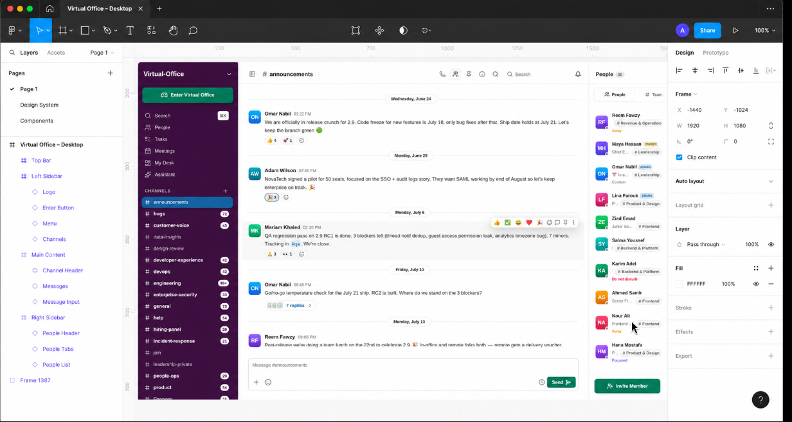
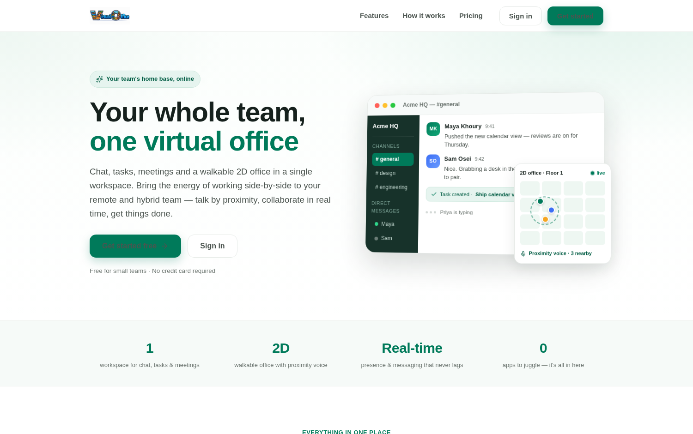

Features / Designed deliberately, not decorated
Designed deliberately, not decorated
WebEvery screen traces back to a user story from real research into remote-work pain, not to "it looked nice." Seven built-in themes share one architecture — only the core hue changes.

Onboarding is two screens: sign up, land inside your workspace.
